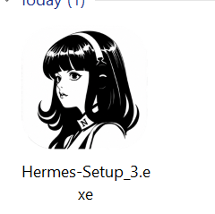
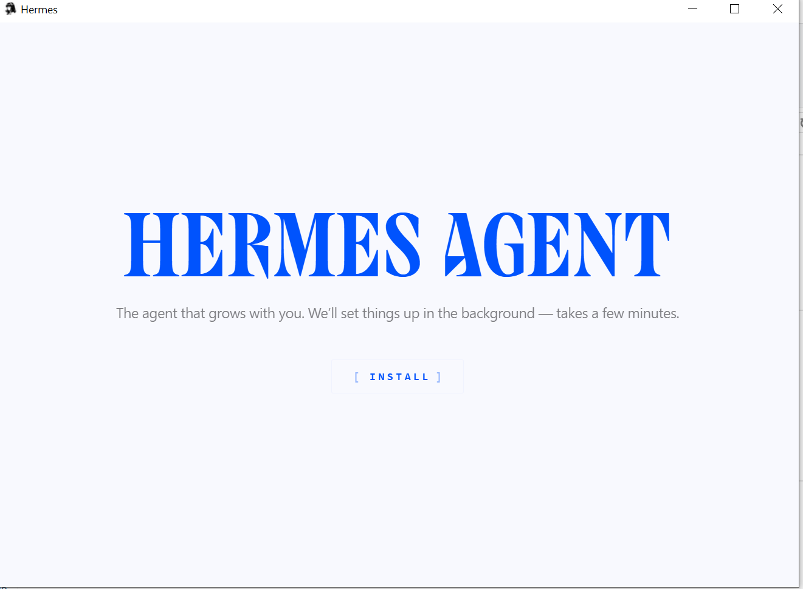
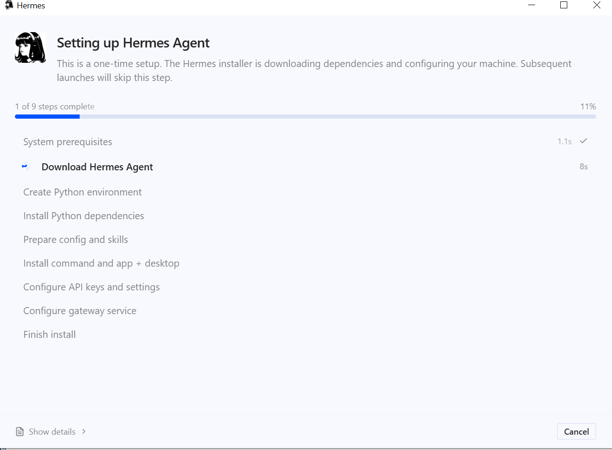
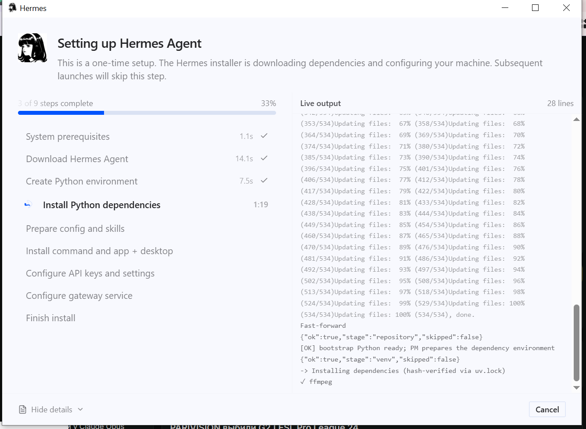
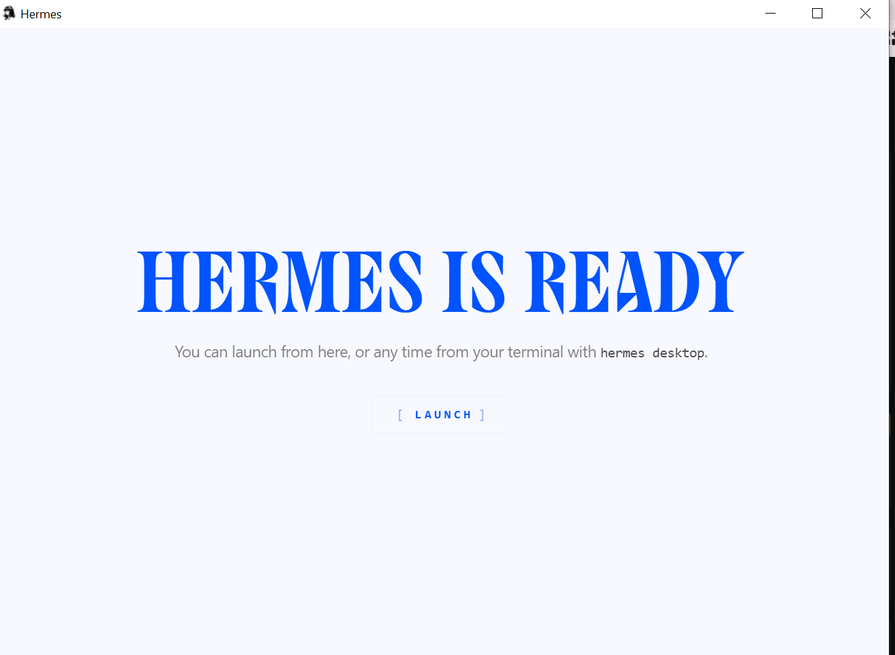
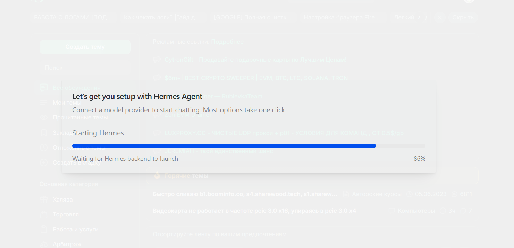
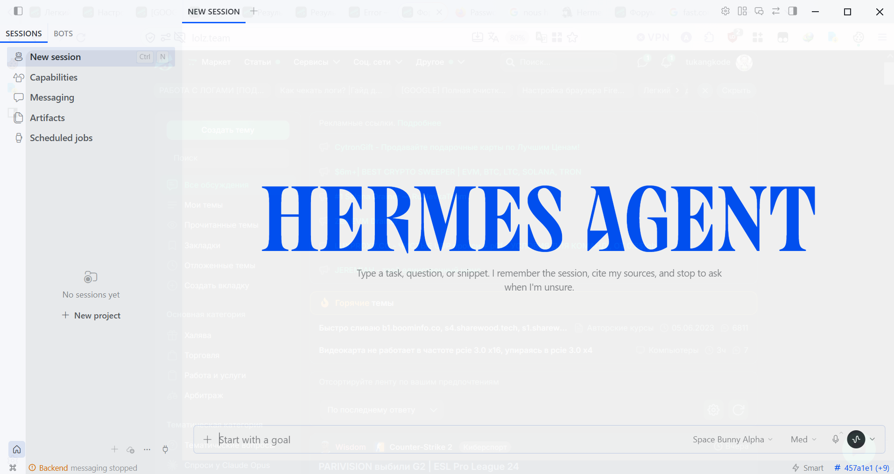

1 Sebelum Mulai — Cek Syaratnya
Nggak perlu PC mahal. Yang penting OS-nya masih didukung dan ada ruang disk.
Selama PC-nya nggak terlalu tua — misal i3-2100 — dan masih bisa jalanin Windows 10, Hermes harusnya bisa dipasang dan dipakai.
https://hermes-agent.nousresearch.com atau GitHub resmi https://github.com/NousResearch/hermes-agent.
Di luar itu bukan tempat resmi — berisiko kena malware.
2 Langkah demi Langkah
Install Hermes Desktop itu straightforward — delapan langkah, nggak ada yang ribet. Screenshot diambil dari proses install aslinya.
1 Download installer dari situs resmi
Buka situs Nous Hermes, lalu klik Download For Windows. Pastikan kamu ambil dari hermes-agent.nousresearch.com atau GitHub resmi NousResearch/hermes-agent — jangan dari link random atau mirror yang nggak dikenal.

2 Cari file installer-nya
Pergi ke folder Download, temukan file installer Hermes Agent, lalu jalankan (double-click).

3 Klik Install
Jendela installer terbuka — klik Install dan biarkan prosesnya jalan.

4 Download dependency (bisa lambat)
Sama seperti versi CLI, installer ini mengunduh dependensi dari GitHub yang juga di-throttle di jaringan IndiHome. Kalau lambat, nyalain VPN atau WARP 1.1.1.1.

5 Pantau progress lewat Show Detail
Ada satu hal yang bisa kamu lakukan buat mengecek progress instalasi: klik tombol Show Detail. Di situ keliatan log lengkap apa yang sedang diproses.

6 Tunggu proses build — jangan biarkan PC tidur
Proses paling lama ada di tahap install command and app + desktop, karena Hermes pada dasarnya sedang merakit tampilan GUI versi desktop di perangkatmu. Bisa ditinggal, tapi pastikan pengaturan PC-mu tidak membuat layar redup atau sleep. Setelah selesai, kamu akan ditanya soal konfigurasi Nous Hermes seperti di proses CLI — ikuti saja. Kalau kamu sudah install CLI, nggak perlu auth lagi. Terakhir, klik Launch.

7 Initial startup
Aplikasi Hermes Desktop terbuka dan menjalankan startup pertamanya.

8 Selesai
Done. Hermes Desktop sudah terpasang dan siap dipakai. Kalau mau versi terminal yang lebih ringan, lihat Install Hermes CLI di Windows.

✓ Selesai — Waktunya Pakai
Hermes sudah terpasang dan terhubung. Tinggal jalankan:
hermes desktop
Perintah itu buka mode chat Hermes di terminal. Keluar kapan saja dengan Ctrl + C atau perintah /exit.
Lanjut ke mana?
! Kalau Macet
Tombol copy nggak jalan / ada peringatan clickfix
Kalau kamu pakai adblock, kadang tombol copy di situs ke-blokir dan muncul peringatan soal clickfix attack. Aman — tinggal klik copy sekali lagi, atau blok manual perintahnya.
Download terasa lambat / stuck di GitHub
Ini biasa terjadi di jaringan IndiHome/Telkom, karena download dari GitHub di-throttle. Nyalain VPN atau Cloudflare WARP (1.1.1.1) — biasanya langsung ngebut lagi.
Perintah hermes nggak dikenali
Hermes ditaruh di C:\Users\NAMAKAMU\AppData\Local\hermes\bin dan baru kebaca di window baru.
Tutup PowerShell, buka lagi yang baru, lalu coba hermes --help.
Masih gagal? Panggil langsung: & "$env:LOCALAPPDATA\hermes\bin\hermes.exe"
Panduan ini bantu? Support riset biar bisa bikin tutorial lanjutan.
☕ Trakteer di Trakteer.id